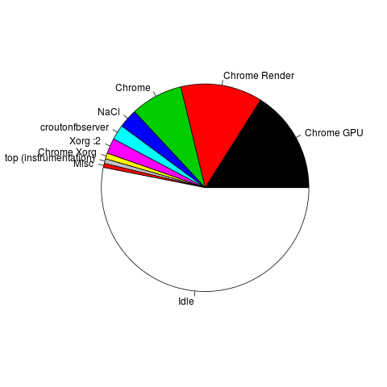

falco - criat 2d
./falco/424c9dc8ddfc27767d896c12b52b35602343deda-20140926-091826.log
user: 33.6%; system: 12.8%; nice: 0.0%; waste: 0.0%; idle: 53.4%;
|  |
 |
falco - criat 3d, byte inversion in NaCl
./falco/2b8601523daeeaa336cbba977c27bc429ff7a758-20140926-090727.log
user: 33.6%; system: 10.6%; nice: 0.0%; waste: 0.0%; idle: 55.6%;
x86-alex - 2d, 36 fps
./x86-alex/424c9dc8ddfc27767d896c12b52b35602343deda-20140929-133042.log
user: 31.8%; system: 19.7%; nice: 0.0%; waste: 0.1%; idle: 48.1%;
x86-alex - 3d, 26 fps
./x86-alex/30aa7de3d561696554205b5c804762ac66e1cfff-20140929-132323.log
user: 42.5%; system: 13.6%; nice: 0.0%; waste: 0.1%; idle: 43.6%;
peach_pit - criat 2d, fps is a bit unstable, around 45fps
./peach_pit/424c9dc8ddfc27767d896c12b52b35602343deda-20140926-105000.log
user: 20.0%; system: 23.8%; nice: 0.0%; waste: 0.1%; idle: 55.9%;
peach_pit - criat 3d, fps a bit better (50?)
./peach_pit/30aa7de3d561696554205b5c804762ac66e1cfff-20140926-110738.log
user: 26.7%; system: 23.9%; nice: 0.0%; waste: 0.7%; idle: 48.6%;
daisy_spring - 2d, 45 fps
./daisy_spring/424c9dc8ddfc27767d896c12b52b35602343deda-20140929-155643.log
user: 37.9%; system: 37.2%; nice: 0.1%; waste: 0.0%; idle: 24.6%;
daisy_spring - 3d, 50 fps
./daisy_spring/30aa7de3d561696554205b5c804762ac66e1cfff-20140929-160356.log
user: 50.3%; system: 31.6%; nice: 0.1%; waste: 0.1%; idle: 17.7%;